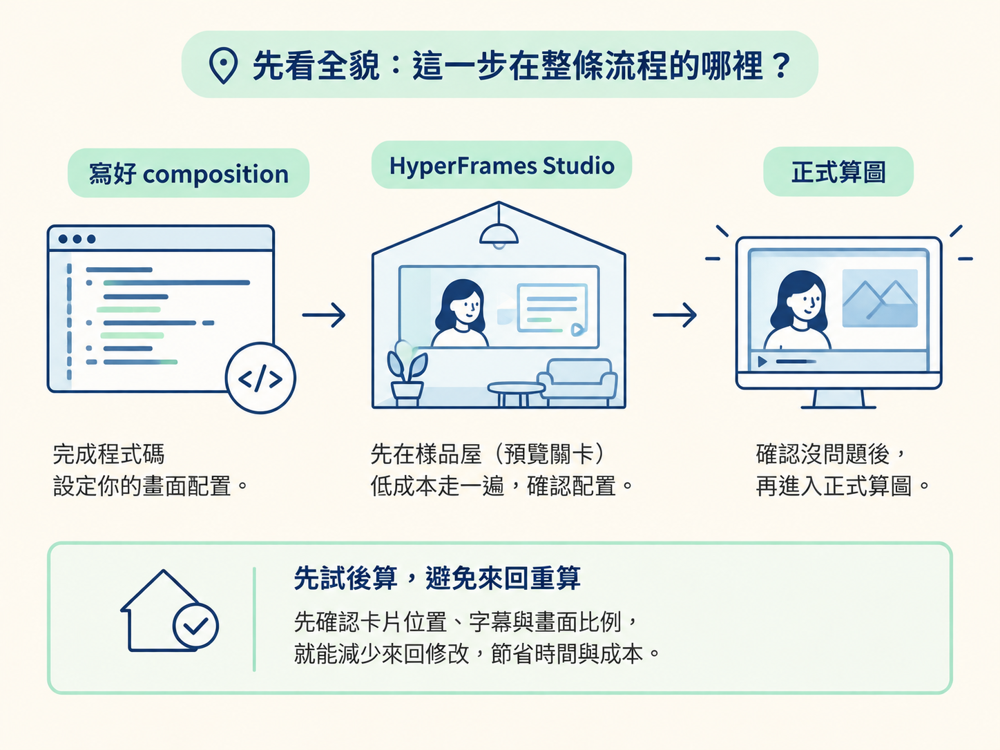
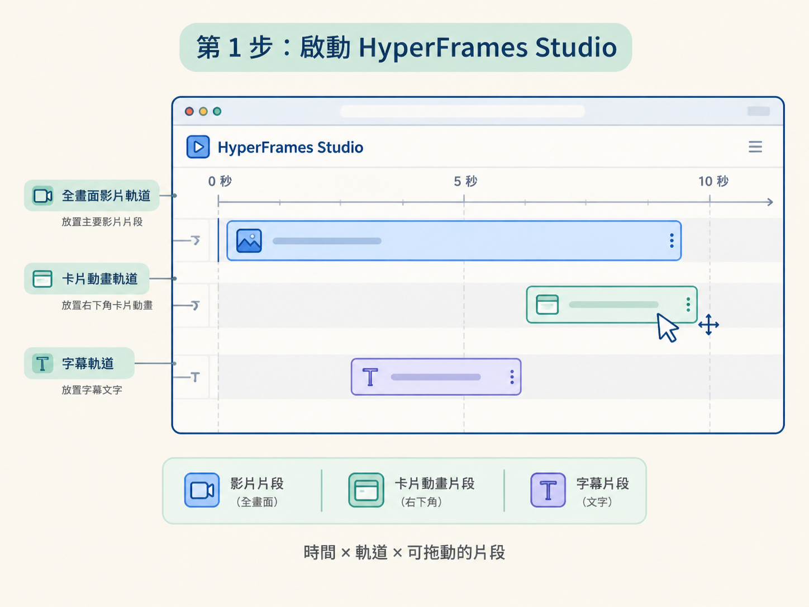
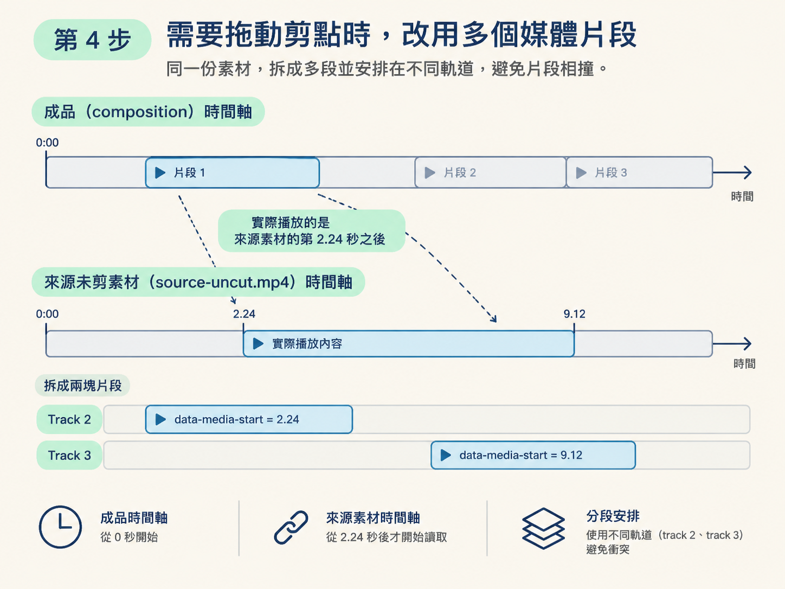

上一課，你已經把卡片與字幕排進 composition：每個拍點有對應卡片，文字也照著台詞放好。現在的問題是，這些安排還停留在程式碼裡的數字，你還不知道它們實際播放時看起來順不順。
這一課位在「寫好 composition」和「正式算圖」之間。你會先用 HyperFrames Studio 打開 localhost 時間軸，把卡片動畫與字幕套到剪好的影片上預覽，再用拖曳調整片段的起點、軌道和長度。確認畫面沒問題後，才進入下一步的算圖。
這樣做可以避免一個常見的來回：先花好幾分鐘算出影片，才發現卡片早了半秒、字幕壓到人像，或全畫面縮到右下角的過渡不夠順。Studio 就像正式施工前的樣品屋，先讓你走一遍、摸一遍，確認配置再定稿。

前置條件：composition 已經寫好，卡片動畫與字幕也都已就位。本課不處理動畫怎麼寫，而是專注在怎麼預覽、怎麼微調，以及什麼時候可以送去算圖。
學完後，你應該能完成以下流程：
data-media-start 的多片段結構。Studio 不需要另外安裝桌面應用程式，它是 HyperFrames 專案內建的預覽功能。請在專案資料夾中執行下面的指令。預期結果是：本機會啟動預覽服務，瀏覽器則會開啟時間軸介面。
# Open Studio (live preview at http://localhost:3002)
npx hyperframes@latest preview開啟後，你會看到一條把整支影片攤開的時間軸。橫軸代表時間，縱軸代表軌道，每個片段則是一塊可以拖動的方塊。

這個畫面不是單純的播放器，而是一張可以調整的時程表。對 agent 下「open the HyperFrames Studio and apply those slide-card motion graphics to our cut video」這類指令後，卡片動畫與字幕就會被放到這條時間軸上。
啟動 Studio 後，先不要急著拖片段。第一輪請完整播放一次，先建立整體感，再記下明顯不對的地方。
這一輪主要檢查三件事：
這些問題只看程式碼很難確認。卡片和字幕是按照數字排進時間軸的，只有實際播放，才能知道它們是不是跟畫面和台詞對得上。
Studio 適合做小範圍的時間軸微調，但不是完整的剪輯軟體。先分清楚它能做什麼，才不會試著拖出一個它根本不支援的操作。
| 操作 | 會更新什麼 |
|---|---|
| 水平拖動片段 | 更新 data-start，也就是片段出現的時間。 |
| 在軌道之間上下拖動 | 更新 data-track-index，把片段換到另一條軌道。 |
| 拖動右側控點 | 更新 data-duration，調整片段的結束時間。 |
| 拖動媒體片段的左側控點 | 同時更新 data-start 與 data-media-start，讓片段往前裁進來源素材。 |
請先注意限制：Studio 不能從片段中間切開來源素材，也不能對非媒體的動態片段做前緣裁切。此外，它沒有鍵盤快速鍵、多選或復原功能。
因此，如果只是把卡片往前移一點、換到另一條軌道，或縮短片段，Studio 就很適合；如果要重新切割來源素材或做較複雜的剪輯，就應該回到程式碼或使用 ffmpeg 處理。
如果你希望能在 Studio 裡直接拖動剪點，不能只放一個完整的影片片段。你需要把同一份未剪素材拆成多個片段，並用 data-media-start 指定每個片段要從來源素材的哪個時間點開始播放。
下面的範例把同一份素材拆成兩塊，兩塊片段分別放在不同軌道，避免相鄰片段在同一條軌道上相撞：
<div id="videoFrame">
<video class="stage-video clip" data-start="0.00" data-duration="2.56"
data-media-start="2.24" data-track-index="2" muted playsinline preload="auto"
src="assets/source-uncut.mp4"></video>
<video class="stage-video clip" data-start="2.56" data-duration="3.74"
data-media-start="9.12" data-track-index="3" muted playsinline preload="auto"
src="assets/source-uncut.mp4"></video>
<!-- alternate tracks 2/3 so adjacent clips don't collide on a shared track -->
</div>這裡要分清楚兩個欄位：
data-start：片段放在整支影片時間軸上的起點。data-media-start：片段要從來源素材的第幾秒開始播放。以上面的第一塊片段為例，它在成品時間軸的第 0 秒開始，但實際播放的是來源素材第 2.24 秒之後的內容。當你在 Studio 裡拖動左側控點時，就能直接調整這個來源起點，不必每次都重新跑一次 ffmpeg。

這種多片段做法有一個重要代價：聲音不能用同樣的方式一起拆。
如果多個帶有相同 src 的音訊元素同時放進預覽，它們可能會一起播放，造成回音。因此，音訊需要另外處理成一個乾淨的檔案，時間軸上也只放一個音訊片段。
換句話說，在 Studio 裡拖動影片邊界時，聲音的對齊要另外確認。如果只是要交付一個最終算圖，不需要在 Studio 裡拖動剪點，那麼使用單一的 source.mp4 加上單一音訊片段，會單純許多。
Studio 最有價值的地方，是讓你能用很低的成本試不同版本。先播放目前版本，找出真正需要調整的地方；接著只做一兩個小改動，再立刻播放比較。
例如，第一版完成後，可以嘗試在三個拍點上重新安排卡片：左邊放兩張卡片，右邊放一張。這只是移動時間軸上的片段，很快就能看到結果。如果畫面變得太擁擠，也能直接拖回原來的位置。
實際上，最後也可能選擇更簡單的版本：拿掉所有卡片，讓畫面從全螢幕慢慢推近，只讓文字自己出現。這個選擇不是只看程式碼做出來的，而是先在 Studio 裡比較「有卡片」和「沒卡片」兩種版本，再根據實際畫面判斷哪一種更適合開場。
agent 可以幫你搭好結構，但最後的取捨仍然要由你看過畫面後決定。時間軸預覽就像試穿衣服：程式碼能把衣服做出來，Studio 才能讓你確認穿在實際畫面上合不合身。
建議按照下面的節奏操作：
不要把 Studio 當成重新發明整支影片的地方。它的任務是讓你便宜地試、快速地看，並在送算前完成最後的品管。
完成這一課時，你應該已經能在瀏覽器中打開 HyperFrames Studio，看到卡片動畫、字幕與剪好的影片出現在同一條時間軸上。播放時，卡片應該在對應的台詞或拍點出現，字幕不應壓住重要畫面，過渡效果也應該符合你選定的版本。
如果需要調整，你可以在時間軸上移動片段、換軌道或改變長度；如果需要微調來源剪點，則使用多個帶有 data-media-start 的媒體片段，並另外處理成單一乾淨的音訊檔案。
HyperFrames Studio 是跑在 localhost 的時間軸介面，用npx hyperframes@latest preview打開。它讓你預覽卡片動畫與字幕、拖動片段調整起點、軌道與長度，也能拖動媒體片段的左側控點，同時更新data-start與data-media-start。它的限制是不能從中間切開素材、沒有復原與多選。想讓剪點在 Studio 裡可拖，就用多個帶data-media-start的片段，並記得音訊要另外處理成單一乾淨檔案。確認版本後，才進入算圖。
版本確認後，下一步就是把 composition 算成 1920×1080 的 MP4，並在算完後抽取開頭、中段與結尾的畫格做品管。原理先留在其他章節，這一課先把流程收在一個可操作、看得到的結果：你已經看過成品的動態預覽，也挑好了要正式算圖的版本。